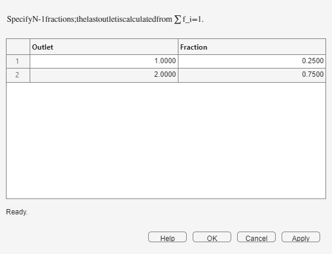

The splitter creates two or more branches. It scales Q by each fraction while copying the incoming concentration and accumulated RTD to every outlet.
Decide how many paths are required and the fraction of inlet volumetric flow assigned to each. Every branch must eventually terminate at a monitor or return through a matching mixer.

A hydraulic split does not dilute the tracer at the split point: all branches receive the same concentration. Only Q changes. Differences in downstream C(t) and E(t) are created by the vessels on each branch.
| Symptom | What to do |
|---|---|
| The final fraction is zero or negative | Reduce the specified fractions so their sum is below one. |
| Fractions do not add to one | Enter only N−1 values and let the final row be calculated. |
| A branch is left disconnected | Connect or remove it before running the complete network. |